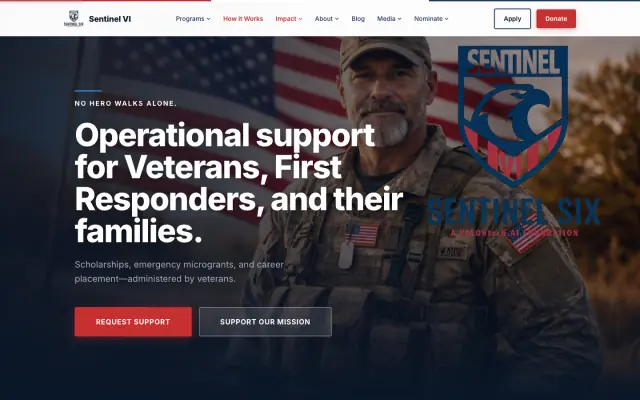

2025
Sentinel VI Foundation
- Brief
- A veterans and first responders foundation whose support programmes were being run over email.
- Built
- Scholarships, emergency microgrants and career placement, each applied for on the site. Public pages for the programmes, private handling behind them.